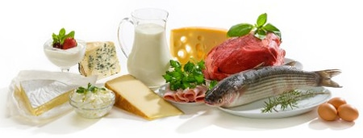
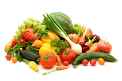

Healthy Foods to Eat
Jan 2, 2017 1:37pm
You should eat natural, unprocessed foods that humans are genetically adapted to eating. Research shows that such foods are great for health.
For healthy people who exercise and don’t need to lose weight, there is absolutely no proven reason to avoid tubers like potatoes and sweet potatoes, or healthier non-gluten grains like oats and rice.
If you are overweight or have metabolic issues (low HDL, high LDL cholesterol, triglycerides, belly fat, etc.) you should restrict all high-carb foods.
Healthy Foods
Meat: Beef, lamb, pork, chicken, etc. Humans have eaten meat for hundreds of thousands of years. Unprocessed meat is good for you, especially if the animals ate natural foods (like beef from grass-fed cows).
Fish: Fish is great. Very healthy, fulfilling and rich in omega-3 fatty acids and other nutrients. You should eat fish (preferably fatty fish like salmon) every week.
Eggs: Eggs are among the most nutritious foods on the planet. The yolk is the most nutritious and healthiest part. Omega-3 eggs are best.
Vegetables: Contain fiber and many nutrients that are essential for the human body. Eat vegetables every day.
Fruit: Increase variety, taste good, are easy to prepare and rich in fiber and vitamin C. They’re still pretty high in sugar, so eat in moderation if you need to lose weight.
Nuts and Seeds: Almonds, walnuts, sunflower seeds, etc. Rich in various nutrients, but very high in calories. Eat in moderation if you need to lose weight.
Potatoes: Root vegetables like potatoes and sweet potatoes are healthy, but they’re still high in carbs. Eat in moderation if you need to lose weight.
High-Fat Dairy: Cheese, cream, butter, full-fat yogurt, etc. Rich in healthy fats and calcium. Dairy from grass-fed cows will be rich in vitamin K2, which is very important for health.
Fats and Oils: Olive oil, butter, lard, etc. Choose saturated fats for high-heat cooking like pan frying, they are more stable in the heat.
What to drink?
May 22, 2017 9:01pm
Coffee: Coffee is healthy and very rich in antioxidants, but people who are sensitive to caffeine should avoid it. Avoid coffee late in the day because it can ruin your sleep.
Tea: Tea is healthy, rich in antioxidants and has a lot less caffeine than coffee.
Water: You should drink water throughout the day and especially around workouts. No reason to drink a whole ton though, thirst is a pretty reliable indicator of your need.
Carbonated soda without artificial sweeteners is fine.
Avoid sodas with sugar and artificial sweeteners, fruit juice, milk and beer.
Simple Rule: Don’t drink calories.
Read More
How Many Carbs Per Day?
July 2, 2017 8:04am
This varies between individuals.
Many people feel best eating very little carbs (under 50 grams) while others eat as much as 150 grams, which is still low-carb.
You can use these numbers as a guideline:
10-20 grams per day: Very low, can’t eat any carbs except low-carb vegetables. Appropriate if you have a lot of weight to lose or if you have diabetes and/or the metabolic syndrome.
20-50 grams per day: If you need to lose weight fast. You can eat quite a bit of vegetables and one piece of fruit per day.
50-150 grams per day: If you want to achieve optimal health and lower your risk of lifestyle-related disease. There is room for several fruit per day and even a little bit of healthy starches like potatoes and rice.
When you lower carbohydrates below 50 grams per day, you can’t eat any sugar, bread, pasta, grains, potatoes and a maximum of one fruit per day.
Warning For Diabetics: Carbs in the diet are broken down into glucose in the digestive tract, then they enter the body as blood sugar. If you eat less carbs, you will need less insulin and glucose-lowering drugs.
It is very dangerous if your blood sugar drops below a certain level (hypoglycemia). If you have diabetes, consult with your doctor before reducing carbohydrate intake.
Read More
How Many Carbs Per Day?
July 2, 2017 8:04am
A Meal Plan That Can Save Your Life
This is a sample meal plan for one week that supplies less than 50 grams of carbs per day.
Day 1 – Monday:
Breakfast: Omelet with various vegetables, fried in butter or coconut oil.
Lunch: Grass-fed yogurt with blueberries and a handful of almonds.
Dinner: Cheeseburger (no bun), served with vegetables and salsa sauce.
Day 2 – Tuesday:
Breakfast: Bacon and eggs.
Lunch: Leftover burgers and veggies from the night before.
Dinner: Boiled Salmon with butter and vegetables.
Day 3 – Wednesday:
Breakfast: Eggs and vegetables, fried in butter or coconut oil.
Lunch: Shrimp salad with some olive oil.
Dinner: Grilled chicken with vegetables.
Day 4 – Thursday:
Breakfast: Omelet with various vegetables, fried in butter or coconut oil.
Lunch: Smoothie with coconut milk, berries, almonds and protein powder.
Dinner: Steak and veggies.
Day 5 – Friday:
Breakfast: Bacon and Eggs.
Lunch: Chicken salad with some olive oil.
Dinner: Pork chops with vegetables.
Day 6 – Saturday:
Breakfast: Omelet with various veggies.
Lunch: Grass-fed yogurt with berries, coconut flakes and a handful of walnuts.
Dinner: Meatballs with vegetables.
Day 7 – Sunday:
Breakfast: Bacon and Eggs.
Lunch: Smoothie with coconut milk, a bit of heavy cream, chocolate-flavoured protein powder and berries.
Dinner: Grilled chicken wings with some raw spinach on the side.
Do your best to include a variety of vegetables in your diet. If you want to stay below 50g of carbs per day then you can safely have one piece of fruit or some berries every day.
Organic and grass-fed foods are best, but only if you can easily afford them. Just make an effort to always choose the least processed option within your price range.
What About Snacks?
There is no scientific evidence that you should eat more than 3 meals per day. If you do get hungry between meals, here are a few ideas for snacks that are healthy, easily portable and taste good.
- Full-fat Yogurt
- A Piece of Fruit
- Baby Carrots
- Hard-Boiled Eggs
- A Handful of Nuts
- Leftovers
- Some Cheese and Meat
Read More